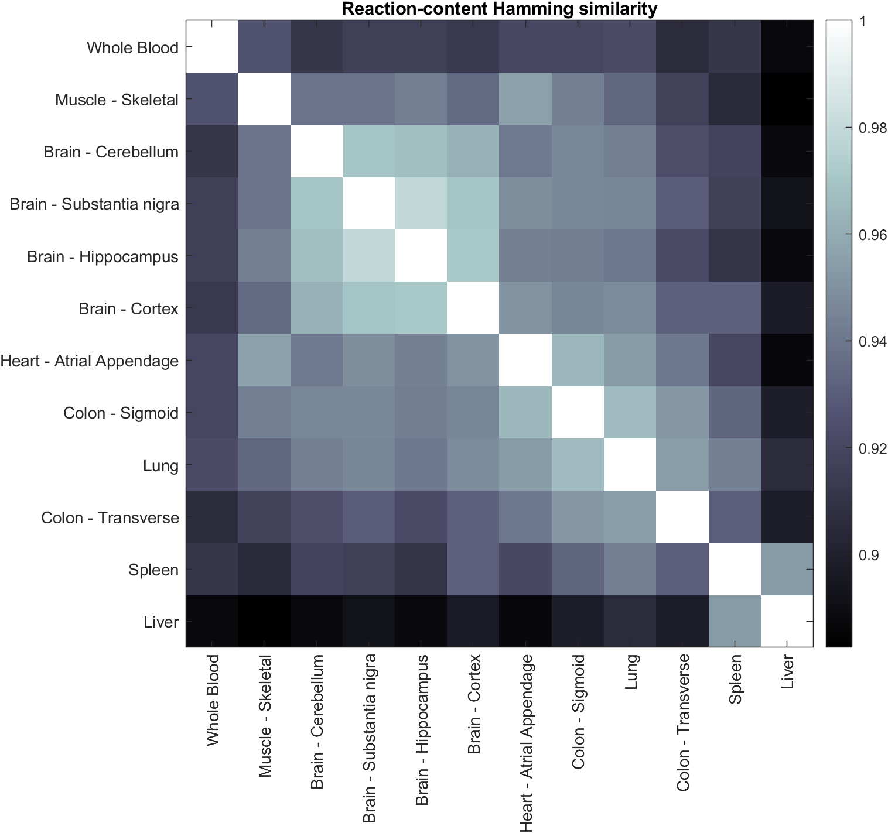
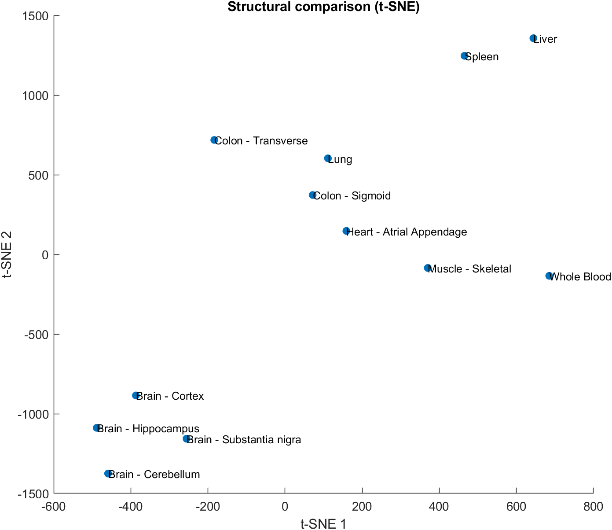
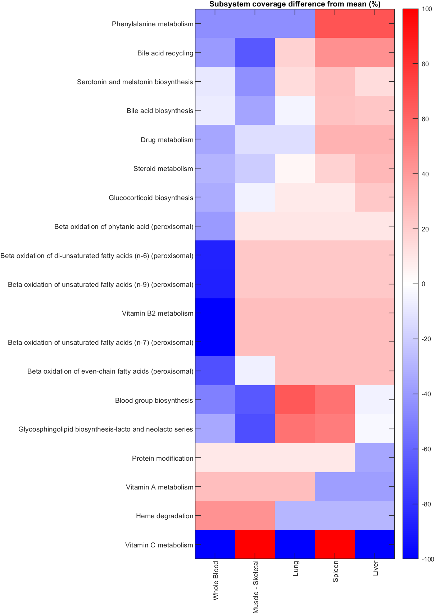

Structural and functional comparison of GEMs
A useful approach in comparing the metabolic network of different tissues or cell types is to compare their corresponding GEMs. There are many ways in which the structure and function of different GEMs can be compared, but this guide will focus on an approach similar to that employed in the Human-GEM publication.
Important
The model comparison approach presented here only applies to GEMs that were extracted from the same reference GEM, such that they share the same namespace (i.e., same reaction, metabolite, and gene ID types).
Prepare the GEMs
To demonstrate the comparison methods, we use tissue-specific GEMs extracted from the GTEx tutorial data. For each of the 12 tissues in the dataset, the five samples were averaged and a model was extracted with ftINIT ('1+0'), as described in the GEM extraction section. This produces a cell array models of 12 tissue GEMs, each with its id set to the tissue name.
load('tissueModels.mat'); % a cell array "models" of 12 tissue GEMs
Note
A cell array of models such as models can be generated by models = {liverGEM; lungGEM; kidneyGEM; ... };, where each GEM is a separate extracted model to be compared. Setting a descriptive models{i}.id (e.g., the tissue name) makes the comparison plots easier to read.
Compare GEM structures
The RAVEN compareMultipleModels function can be used to compare some basic features of different models such as reaction content and subsystem coverage.
Call the comparison function with the model array models as input.
res = compareMultipleModels(models);
% Getting model IDs
% *** Done
%
% Comparing subsystem utilization
% *** Done
%
% Comparing model reaction correlations
% *** Done
%
% Comparing model reaction structures
% *** Done
Take a look at the contents of the results structure res.
res
% res =
%
% struct with fields:
%
% modelIDs: {12×1 cell}
% subsystems: [1×1 struct]
% reactions: [1×1 struct]
% structComp: [12×12 double]
% structCompMap: [12×3 double]
Detail on the meaning of each output can be found in the compareMultipleModels function description (view using help compareMultipleModels), but a brief overview is provided here:
| Field | Subfield | Description |
|---|---|---|
| modelIDs | -- | List of GEM IDs |
| subsystems | ID | List of subsystem IDs corresponding to rows in matrix subfield |
| matrix | Number of reactions in each subsystem for each GEM | |
| reactions | IDs | List of reaction IDs corresponding to rows in matrix subfield |
| matrix | Binary matrix denoting presence (1) or absence (0) of each reaction in each GEM | |
| structComp | -- | Hamming similarity of reaction content between each pair of GEMs |
| structCompMap | -- | Reduced dimension (tSNE) mapping of GEMs based on the Hamming distances of their reaction content |
The compareMultipleModels function represents the reaction content of each GEM as a binary vector (missing reactions are 0, present reactions are 1) to enable the use of quantitative comparison metrics, such as Hamming distance. GEMs that share fewer reactions will be separated by a larger Hamming distance, whereas GEMs that contain many of the same reactions will exhibit a small Hamming distance.
Visualize the reaction content Hamming similarity (1 - Hamming distance) among the GEMs as a heatmap. The Human-GEM publication used the clustergram function, but that requires the MATLAB Bioinformatics Toolbox. The code below instead uses imagesc together with hierarchical clustering from the Statistics and Machine Learning Toolbox (linkage, optimalleaforder), so no Bioinformatics Toolbox is needed.
% order the models by clustering their reaction-content distances
D = 1 - res.structComp; % Hamming distance
D = (D + D')/2; % enforce symmetry
D(1:size(D,1)+1:end) = 0; % zero diagonal
order = optimalleaforder(linkage(squareform(D), 'average'), squareform(D));
% plot the (reordered) similarity matrix
figure;
imagesc(res.structComp(order, order));
colormap(bone); colorbar; axis square;
set(gca, 'XTick', 1:numel(res.modelIDs), 'XTickLabel', res.modelIDs(order), 'XTickLabelRotation', 90, ...
'YTick', 1:numel(res.modelIDs), 'YTickLabel', res.modelIDs(order), 'TickLabelInterpreter', 'none');
title('Reaction-content Hamming similarity');

Note
Given the generally limited plotting flexibility in MATLAB, another option is to export the res.structComp matrix and/or other results to a csv or text file and import them into R, python, or another package with more plotting flexibility.
The structCompMap field of the model comparison results structure contains a mapping of the GEMs' binary reaction vectors in reduced (3) dimensions using tSNE. Since 3D plots can be difficult to interpret, we can regenerate the mapping in 2 dimensions.
rng(1); % set random seed to make reproducible
rxn2Dmap = tsne(res.reactions.matrix', 'Distance', 'hamming', 'NumDimensions', 2, 'Perplexity', 3);
% plot and label the GEMs in tSNE space
figure;
scatter(rxn2Dmap(:,1), rxn2Dmap(:,2), 40, 'filled');
hold on
text(rxn2Dmap(:,1), rxn2Dmap(:,2), res.modelIDs, 'Interpreter', 'none');

The Hamming distance heatmap and tSNE projection give an overall picture of how similar or different models are from one another, but they do not resolve the cause or biological meaning of those differences. A convenient source of biological context is the subSystems field in the model, which describes the metabolic subsystem or pathway to which reactions belong. We can therefore look at differences in reaction content in each of these subsystems to see which parts of metabolism differ most among the GEMs.
To simplify the interpretation of results, select a subset of GEMs to analyze further.
useModels = {'Liver', 'Lung', 'Muscle - Skeletal', 'Spleen', 'Whole Blood'};
keep = ismember(res.modelIDs, useModels);
subMat = res.subsystems.matrix(:, keep);
Calculate the percent difference of GEM subsystem coverage (number of reactions in the subsystem) from the mean coverage.
subCoverage = (subMat - mean(subMat, 2)) ./ mean(subMat, 2) * 100;
Visualize the difference in subsystem coverage as a heatmap, including only subsystems with at least a 25% difference in one or more GEMs. Again we avoid clustergram, clustering the rows with linkage/optimalleaforder and building a blue-white-red diverging colormap by hand.
% select subsystems to include in the plot
inclSub = any(abs(subCoverage) > 25, 2);
M = subCoverage(inclSub, :);
subNames = res.subsystems.ID(inclSub);
% blue-white-red diverging colormap (no Bioinformatics Toolbox required)
half = 128;
rwb = [ [linspace(0,1,half) ones(1,half)]', ...
[linspace(0,1,half) linspace(1,0,half)]', ...
[ones(1,half) linspace(1,0,half)]' ];
% cluster the rows (subsystems) and plot
rowOrder = optimalleaforder(linkage(M, 'average', 'euclidean'), pdist(M));
figure;
imagesc(M(rowOrder, :), [-100 100]);
colormap(rwb); colorbar;
set(gca, 'XTick', 1:sum(keep), 'XTickLabel', res.modelIDs(keep), 'XTickLabelRotation', 90, ...
'YTick', 1:numel(subNames), 'YTickLabel', subNames(rowOrder), 'TickLabelInterpreter', 'none');
title('Subsystem coverage difference from mean (%)');

Compare GEM functions
In addition to GEM structure, the functionality of GEMs can be compared to provide insight into differences in their metabolic activity. One way in which the function of a GEM can be assessed is by evaluating its ability to perform different metabolic tasks.
The tissue GEMs used in this example were generated with the list of 57 essential tasks (see the GEM extraction section of this guide for details). Therefore, comparing the GEMs' ability to complete these 57 tasks would be highly uninteresting because they were all generated with the requirement that these tasks are functional. For a more interesting comparison, we will instead use the larger list of metabolic tasks.
To speed up the calculation and to narrow the focus, we will include only a few of the GEMs in this comparison (the same subset as above).
useModels = {'Liver', 'Lung', 'Muscle - Skeletal', 'Spleen', 'Whole Blood'};
keep = ismember(res.modelIDs, useModels);
The larger metabolic task file metabolicTasks_Full.txt can be found in the /data/metabolicTasks/ subdirectory of the Human-GEM repository.
% replace '/my/path/' with the actual path on your machine
taskFile = '/my/path/Human-GEM/data/metabolicTasks/metabolicTasks_Full.txt';
Re-run the compareMultipleModels function, now including the location of the metabolic task file.
res_func = compareMultipleModels(models(keep), false, false, [], true, taskFile);
Note
During the task check, RAVEN prints ERROR messages for tasks that a GEM cannot complete (e.g., "Could not find all inputs ..."). These are not actual errors, but indicate that a task failed because the GEM was missing one or more metabolites involved in the test.
The results structure will now have an additional funcComp field.
res_func.funcComp
% ans =
%
% struct with fields:
%
% matrix: [257×5 double]
% tasks: {257×1 cell}
The matrix subfield is a binary matrix indicating whether each task passed (1) or failed (0) in each GEM, and the tasks subfield contains the name of the evaluated tasks.
Identify which tasks differed among the GEMs (i.e., not all passed or all failed).
isDiff = ~all(res_func.funcComp.matrix == 0, 2) & ~all(res_func.funcComp.matrix == 1, 2);
diffTasks = res_func.funcComp.tasks(isDiff)
% diffTasks =
%
% 0×1 empty cell array
In this example, none of the 257 tasks differed among the five tissue GEMs — each task was either performed by all of them or by none of them, so diffTasks is empty. This is a consequence of the '1+0' ftINIT setup used to generate the models, which retains most reactions that lack gene rules and therefore yields relatively complete models with shared task capabilities.
To reveal finer functional differences between tissues, generate the models with a more stringent extraction — for example the '1+1' setup, which removes more reactions — or use the tINIT models from the Human-GEM publication. When tasks do differ, the difference can be visualized with a spy plot of the tasks that vary:
figure;
spy(res_func.funcComp.matrix(isDiff,:), 30);
set(gca, 'XTick', 1:numel(useModels), 'XTickLabel', res.modelIDs(keep), 'XTickLabelRotation', 90, ...
'YTick', 1:numel(diffTasks), 'YTickLabel', diffTasks, 'YAxisLocation', 'right', 'TickLabelInterpreter', 'none');
xlabel(gca, '');